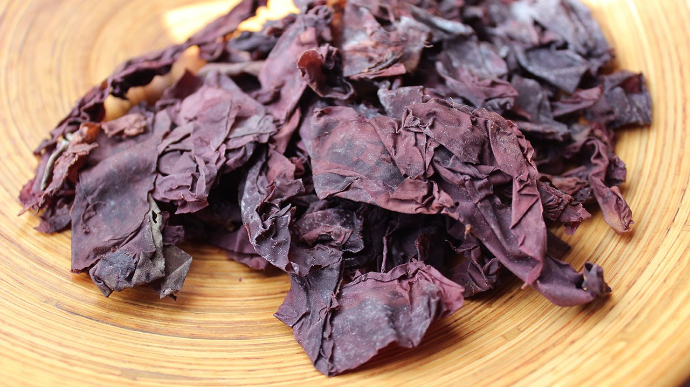

New Brunswick Food and Drink
The province is famous for seafood. Fredericton, Saint John and Moncton offer international cuisine.
Specialities:
- Seafood highlights include lobster from Shediac and delicately flavoured Atlantic salmon served with butter,
new potatoes and fiddleheads (young fronds of ostrich fern served with butter and seasoned or used cold in salads).
- New Brunswick dulse, an edible seaweed, is a local favorite.
- Home-made baked beans and steamed brown bread are served as traditional Saturday
night supper.
- Rapee pie, made with chicken, is an Acadian speciality for Sundays or festivals.
- La rapure is a potato and salted pork dish.

Lobster Bisque Dewey
4 Ounces Maine Lobster meat
2 Tablespoons butter
1 Tablespoon flour
A Dash of sherry (optional)
Paprika
1/2 Cup cream
1/2 Cup light cream
1/4 Teaspoon salt
A Dash cayenne pepper
In a saucepan, melt butter. Add Maine Lobster meat and cook over moderate heat for 3 minutes, stirring constantly so
Lobster won't burn. Stir in flour. Add cream, light cream, salt, and cayenne pepper. Cook, stirring constantly, until
soup is slightly thickened and very hot. Divide into bouillon cups and sprinkle with paprika. A dash of sherry may be added.
Dulse salad
1 c dulse, rinsed and cut into small pieces
2 cups sprouts
1/2 cup sliced red and yellow peppers
1/2 cup sliced scallions or red onion
1 stalk celery, sliced
1/2 cup avocado, scopped with a melon ball tool
1 tomato cut into small wedges
Combine the above salad ingredients and serve on a bed of greens, topped with dressing.
Dressing: lemon juice, raw honey, and tahini, in proportion to your taste